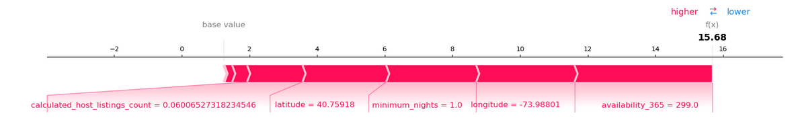

Supervised machine learning models are crucial in analyzing datasets and making predictions of the data in a wide range of domains. In one of our assignments for the machine learning course CPSC 330, we performed machine learning strategies on a dataset that describes the possible contributors to the monthly views of the New York City Airbnb listings for 2019, and we find our observations interesting.
The dataset (link) we use for this assignment is downloaded from Kaggle, which lists the New York City Airbnb postings for 2019. Our goal is trying to predict one column in the dataset “reviews_per_month” giving the data of other columns in the dataset.
Our analysis basically contains 5 parts:
Performing EDA, i.e. exploring the data on the given dataset can provide us with an overall intuition towards our work. After exploring, we find the dataset contains 16 columns, aside of our target “reviews_per_month”, other 15 features are “id”, “name”, “host_id”, “host_name”, “neighbourhood_group”, “neighbourhood”, “latitude”, “longitude”, “room_type”, “price”, “minimum_nights”, “number_of_reviews”, “last_review”, “reviews_per_month”, “calculated_host_listings_count”, “availability_365”. The numeric features are the features that contain only numbers. We print out plots of the numeric features’ distribution:
We find that aside from the features such as “id” that has no relevance to the target data, many of other features don’t have the same scale, such as price has the range of 0-10000 and the minimum nights has the range of 0-1200. Therefore, we need to scale the numerical data to avoid any of them having unexpected great weight on the target because of the difference on scales. We also considered the influence of non-numeric features on the target, and we will further explain that in the feature engineering part.
Feature engineering is to perform a preprocessing on the dataset that can help us on getting a better result on running the machine learning model. In fact, the EDA work we have done above has already provided us with some insights on the dataset. For the numerical features, after scaling them, we decided to only keep the “price” and “calculated host listing count”, because aside from “minimum nights”, which most of the values are within the same days of each other, these two columns are the only numerical features that are intuitively relevant to the reviews. For the categorical features, we can use the “one-hot encoding” method to represent each category as a number and thus involve them into the calculation. In our dataset, we will use one-hot encoding methods on the columns “neighbourhood” and “room type”.
In class we have learned several supervised machine learning model, including the linear regression model, the random forest model, the LGBM model, the KNN model, etc. In this assignment, after running the model listed above along with a dummy model, we find that all models out performed the dummy model, with the LGBM model has the highest test score of 0.369.
Most of the supervised machine learning models have a hyperparameter, once they are set, they can’t be modified when running the model and they are crucial to the model performance. To tune the hyperparameter, one can use a built-in tool in python “GridSearchCV” to iterate through given hyperparameters and find the combination with the highest score. After running “GridSearchCV” on our models, we have seen an improvement on the score of the random forest model. However, the score of the LGBM and the KNN model remain unchanged.
In order to select the best features for our model, we want to use python tools to help us visualize the feature importance, and the SHAP plot is a good tool to do that. For the selected base, the SHAP plot will visualize how each feature impact on that base. We explored features that have positive and negative impact on the base “reviews per month” respectively:
All of the variables we experimented seem to contribute positively to a higher review per month count, with the most impactful variables being longitude/latitude, minimum_nights, and availability_365.
We also find that the minimum_nights and the availability _365 negatively impact on reviews per month. However, our model is to large to run including all the numerical features, so we dropped some of the important features in the feature engineering part.
We explored various machine learning models after pre-processed our dataset, tuned their hyperparameters, and reported several test scores. However, the models we selected still suffered from low test scores, with the highest test score we can ever generate being 0.369. This could be because of another mistake we made, which is dropping too many features, since the dataset we received is too large, we have to drop some of them in order for the program to run in a given time. The third mistake we made is in the feature selection part, where the SHAP plot we generated only print out some of the features. It is hard to make a precise conclusion without all the features being shown.
Using the dataset of the Airbnb listing of the housing in New York City in 2019, we generated different supervised machine learning models to predict the reviews given other features of a posting, reached a not very high test score, but since the feature we are predicting is numerical, our model still gives important insights. We hope to gain more knowledge on modifying machine learning models to generate more accurate predictions in our future study.